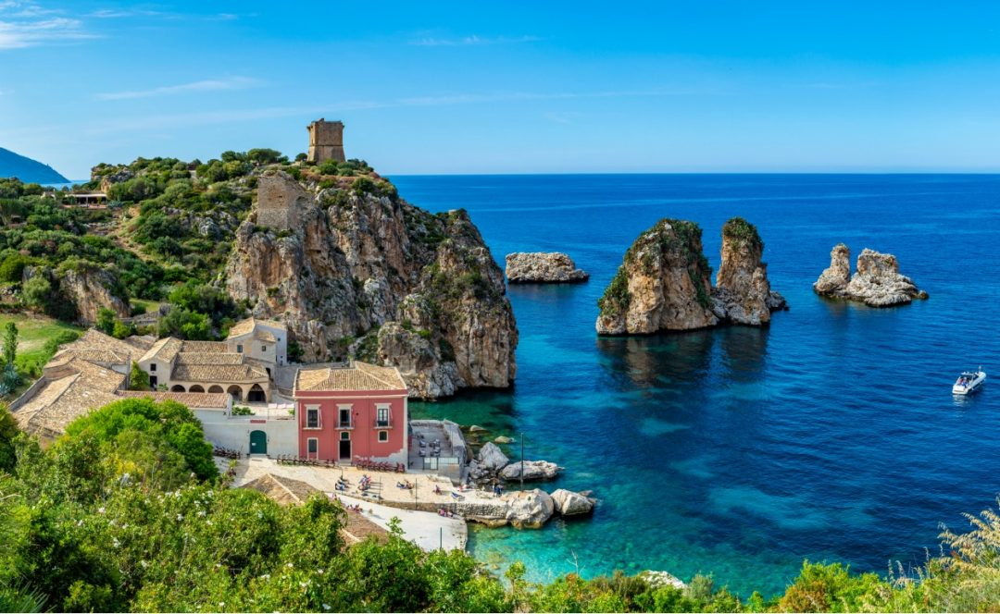
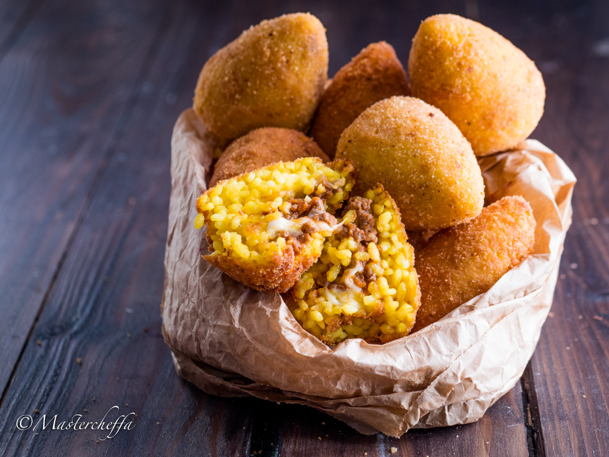
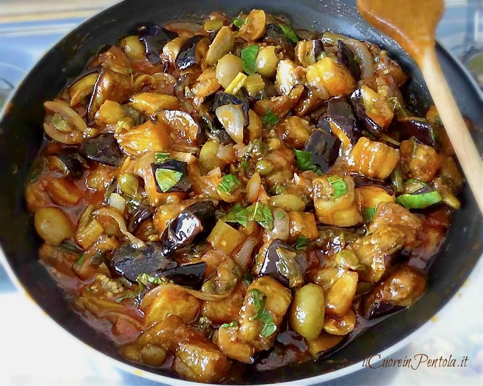

SICILIA

Sicilia – Un trionfo di sapori mediterranei
La cucina siciliana è un ricco mosaico di influenze arabe, normanne e mediterranee, che si riflettono in piatti ricchi di colori, profumi e contrasti di sapori.
Terra di mare e sole, offre specialità uniche come le arancine, la caponata e i dolci squisiti come i cannoli.
Ingredienti freschi, spezie e tecniche antiche rendono la cucina siciliana un’esperienza indimenticabile
SPECIALITA'

ARANCINE (o Arancini)
Descrizione:
Simbolo della cucina pugliese, le orecchiette sono una pasta fresca dalla tipica forma concava, ideale per raccogliere il condimento.
Vengono servite con cime di rapa saltate in padella con aglio, olio extravergine d'oliva, filetti di acciughe e peperoncino.
Il contrasto tra l'amaro delle verdure e la sapidità delle acciughe crea un sapore deciso e inconfondibile.
Curiosità:
Il nome “arancina” deriva dalla forma e dal colore che ricordano una piccola arancia.
Nel messinese e in alcune zone orientali si usa il termine “arancino” e la forma può variare: tonda o a cono.

CAPONATA
Descrizione:
La focaccia barese è una specialità da forno amata in tutta la Puglia.
L’impasto, a base di semola di grano duro, patate lesse e olio d’oliva, risulta soffice all’interno e croccante fuori.
Viene tradizionalmente condita con pomodorini, olive nere e origano, e cotta in teglie unte, che le conferiscono il tipico bordo dorato e saporito.
Curiosità:
Secondo la tradizione, la focaccia veniva preparata e venduta nei forni mentre si attendeva la cottura del pane: un gustoso “antipasto” da portare a casa.

CANNOLI SICILIANI
Descrizione:
I cannoli sono dolci tradizionali siciliani composti da cialde croccanti fritte, riempite con una crema di ricotta di pecora dolce
spesso arricchita con gocce di cioccolato o scorza d’arancia candita. Sono un simbolo della pasticceria isolana, golosi e irresistibili.
Curiosità:
Secondo la tradizione, i cannoli erano un dolce carnevalesco, preparato per festeggiare la fine dell’inverno,
ma oggi sono un dessert apprezzato tutto l’anno, famoso in tutto il mondo.
CARTA DEI VINI
NERO D'AVOLA
Descrizione:
Il Nero d’Avola è il vino rosso più famoso e rappresentativo della Sicilia. Caratterizzato da un corpo pieno e avvolgente, offre profumi intensi di ciliegia, prugna e spezie mediterranee.
Al palato è caldo, fruttato e ben strutturato, capace di accompagnare perfettamente piatti robusti e saporiti.